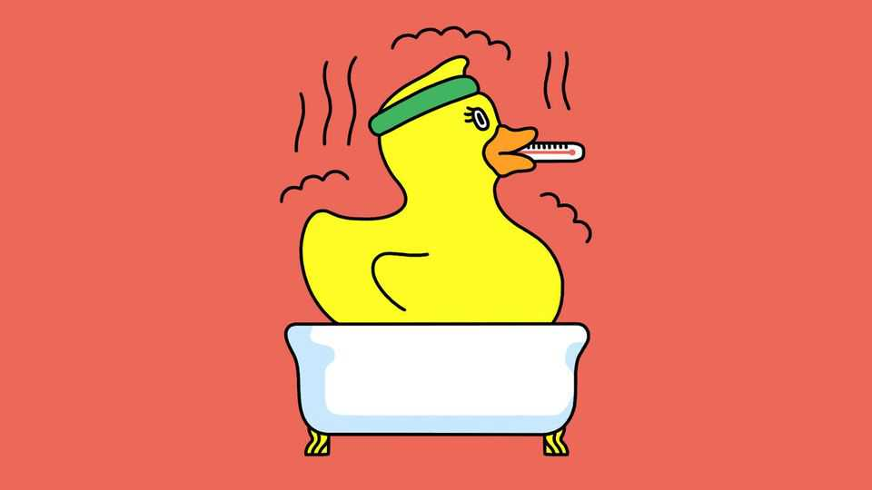

How to train for a heatwave
A nice, hot bath can go a long way
July 16th 2026

ENGLAND’S football team set up camp in West Palm Beach, Florida, on June 1st, almost two weeks before the start of the 2026 World Cup. That was so the players, many of whom were used to training in the mild climate of Britain, could adapt to the blistering heat of the host nations. But as July has brought western Europe’s third heatwave of 2026, even those not competing in elite sports might wonder how they can train appropriately to beat the heat.
Preparing for heat requires exposure to heat. That increases levels of blood plasma—the watery stuff which carries blood cells around the body—meaning the heart does not have to work as hard to pump blood, and can beat in a more leisurely manner for longer.
More plasma also improves blood flow to the skin. There, tiny sweat glands release water and electrolytes onto the skin’s surface, whence the water evaporates, cooling the body. As the body adapts to heat it lowers the temperature at which perspiration begins, as well as the amount of electrolytes lost.
The best way to bring about such changes is “controlled hyperthermia”. Unfortunately, that involves being locked in a heat chamber for 90 minutes and monitored with a rectal thermometer. In the sweltering heat, participants spend 30 minutes exercising to raise their core body temperatures to a target value—usually 38.5°C. The next hour is then spent alternating between exercise and rest to keep their temperature fixed at the target. And you have to repeat this daily for five to seven days.
Few people, however, have a heat chamber—or the necessary monitoring equipment—in their living room. Fortunately, scientists have devised methods more appropriate for everyday life.
The simplest is to exercise outside in the heat, says Neil Maxwell, an environmental physiologist at the University of Brighton, in Britain. “That will naturally acclimatise you.”
Even better is to add a hot bath. A study published in 2016, in the Scandinavian Journal of Medicine & Science in Sports, found that 40 minutes on a treadmill in 18°C heat followed by 40 minutes in a hot bath, daily for six days, improved several measures of acclimatisation.
In fact, as work published in April in Healthcare found, hot baths alone can do the trick. This research, which looked at healthy adults aged over 65, showed that an hour a day in a 40°C bath produced signs of acclimatisation after just four days. So there is, as it were, no need to sweat it. Simply immersing yourself in hot water brings about the necessary increase in core temperature, says Laura Wilson of Middlesex University, also in Britain, who led the study.
Acclimatisation is not permanent. “If you don’t keep exposing yourself to heat, then you’re going to start losing the adaptive benefits,” says Dr Maxwell. Still, only a few days of training are needed in the lead-up to a heatwave. The evidence suggests 75-80% of adaptations build up in the first four to seven days.
Heat can be dangerous. And acclimatisation is not immunity. The usual risks from heat still apply. “Try and replace 150% of the fluid you lose during any kind of session to acclimatise,” says Dr Wilson. “If you’re starting to feel faint or dizzy or lightheaded, take yourself out of the environment.”
When done safely, however, some simple tactics could help take the edge off the weather. Jumping in a hot bath may not be appealing as temperatures begin to rise. But your future self will thank you for it. ■
After a free, evidence-based guide to health and wellness? Sign up to our weekly Well Informed newsletter.